Security risk
Prompt injection, secrets, broad network access, and workspace escapes need test fixtures and pass conditions.
Final global report | SDLC AI Orchestrators
This site consolidates the material collected in gvillarroel/sdlc: permissive open-source candidates, simulations, sandboxing, costs, evidence, risks, pilot plan, traceability, and direct data downloads for a real adoption decision.
There is no universal winner. The right tool depends on whether the team needs a programmable platform, autonomous PRs with sandboxing, local developer productivity, reproducible benchmarking, or an enterprise control plane.
The repository turns an initial conversation about orchestration alternatives into a reproducible evaluation: it filters licenses, scores capabilities, generates scenario rankings, measures stability, reviews costs and risks, separates the sandboxing problem, and lands on a pilot protocol.
The report is organized as a visual processing pipeline. Every artifact belongs to one of these stages, and the final decision is only credible when the chain remains connected from raw inputs to pilot evidence.
data/results/reports/These SVG diagrams are rendered from versioned Mermaid sources in reports/diagrams/, so they are visible directly in GitHub Pages and still remain reproducible from source.



The system works as a chain of evidence. Files in data/*.json define candidates, criteria, scenarios, risks, pilot tasks, and assumptions. Scripts in scripts/ transform those inputs into results/*.csv. Reports interpret the results, and templates turn the simulation into real pilot evidence.

| Scenario | Simulated leader | Practical read |
|---|---|---|
| Custom orchestrator platform | Cline / Cline SDK, nearly tied with OpenHands SDK |
The gap is too narrow for a paper decision; compare both with Deep Agents in a pilot. |
| Secure autonomous PRs | Codex CLI |
Strong if OpenAI dependence is acceptable and the focus is sandboxing, approvals, and PR workflow. |
| Quick local coding | Cline / Cline SDK |
Best first option for local productivity; OpenCode and Aider are useful lightweight benchmarks. |
| Research benchmarking | mini-SWE-agent |
Reproducible baseline for ablations; compare with SWE-agent when fuller workflows are required. |
| Enterprise control plane | Cline / Cline SDK |
Validate governance, multi-team operations, observability, and cost before turning it into a platform. |
The most important signal is not a single first-place result. OpenHands Software Agent SDK appears in the top three in every scenario; Cline / Cline SDK appears in the top three in four of five and wins workflow-centered scenarios. That combination justifies a head-to-head pilot.
This section is aligned with data/alternatives.json and lists every included permissive open-source alternative, not only the shortlist. The scenario tables above explain which candidates lead under specific weighting profiles; this table explains how every candidate should be interpreted.
| Alternative | License / maturity / language | What it is | Strongest signals | Watch points | Role in the decision |
|---|---|---|---|---|---|
Sandcastle |
MIT / beta / TypeScript | TypeScript library for orchestrating coding agents in isolated sandboxes with branch and worktree strategies. | Sandbox isolation, coding fit, CI and PR workflows. | Observability and maturity. | Pilot only if isolated branch or worktree orchestration is a priority. |
Flue |
Apache-2.0 / beta / TypeScript | Programmable TypeScript agent harness with sessions, tools, skills, sandboxing, deployment targets, and observability adapters. | Provider portability, extensibility, deployment flexibility. | Maturity and human control. | Use when a product-specific TypeScript agent platform matters. |
Anchor |
MIT / alpha / JavaScript | Narrow review-harness and plugin-style project centered on Claude Code workflows. | Implementation ease, human control, coding fit. | Multi-agent capability and maturity. | Reference or watchlist item, not a primary platform candidate. |
Omnigent |
Apache-2.0 / alpha / Python | Meta-harness for orchestrating multiple coding-agent backends with policies, sandboxing, and collaboration. | Provider portability, human control, extensibility. | Maturity and implementation effort. | Alpha control-plane idea to monitor or prototype only behind clear risk gates. |
OmniAgent |
MIT / alpha / Python | Local multi-model AI coding agent CLI with ReAct, Plan-Execute, MCP, memory, and TUI concepts. | Provider portability, human control, implementation ease. | Maturity and CI or PR automation. | Experimental local CLI watchlist item. |
Omni Agent |
MIT / alpha / TypeScript | Verification-native local coding-agent runtime with eval gates, memory, subagents, and model profiles. | Security governance, provider portability, multi-agent design. | Maturity and research reproducibility. | Verification-design reference, not an adoption bet yet. |
Deep Agents |
MIT / beta / Python | Batteries-included agent harness with tools, filesystem, permissions, code execution, memory, subagents, and human-in-the-loop controls. | Provider portability, extensibility, persistence and memory. | CI or PR automation and maturity. | Strong Python orchestrator comparator for a head-to-head pilot. |
Codex CLI |
Apache-2.0 / production / Rust | OpenAI terminal coding agent with OS-level sandboxing, approvals, subagents, skills, hooks, and GitHub Action integration. | Security governance, coding fit, sandbox isolation. | Provider portability and persistence or memory. | Secure autonomous PR, local, or CI candidate if OpenAI dependence is acceptable. |
OpenCode |
MIT / production / TypeScript | Open-source coding agent for terminal, desktop, and IDE workflows with broad provider support. | Provider portability, coding fit, extensibility. | Sandbox isolation and observability. | Local provider-flexible benchmark and practical developer-experience comparator. |
Cline / Cline SDK |
Apache-2.0 / production / TypeScript | Autonomous coding agent delivered as SDK, IDE extension, CLI, and automation surface. | Human control, provider portability, extensibility. | Sandbox isolation and research reproducibility. | Primary workflow candidate for human-guided and control-plane scenarios. |
OpenHands Agent Canvas |
MIT / beta / TypeScript | Self-hosted developer control center for running coding agents and automations locally or in the cloud. | Provider portability, deployment flexibility, multi-agent operation. | Maturity and research reproducibility. | Control-center candidate when self-hosted UI and backend switching matter. |
OpenHands Software Agent SDK |
MIT / production / Python | Composable Python and REST SDK for building software-engineering agents with local or ephemeral workspaces. | Provider portability, coding fit, extensibility. | Implementation ease and observability. | Primary platform candidate and the most stable cross-scenario option. |
Open SWE |
MIT / beta / Python | Open-source asynchronous coding-agent framework built on Deep Agents and LangGraph, with cloud sandbox providers and automatic PR creation. | CI and PR automation, sandbox isolation, multi-agent operation. | Implementation ease and maturity. | Async PR platform candidate when autonomous internal coding-agent workflows are the goal. |
Aider |
Apache-2.0 / production / Python | Terminal pair-programming agent focused on Git-based code edits, repo maps, and broad model support. | Coding fit, implementation ease, provider portability. | Multi-agent capability and sandbox isolation. | Pair-programming baseline and fast trial candidate. |
goose |
Apache-2.0 / production / Rust | General-purpose local AI agent with desktop, CLI, API, MCP extensions, and broad provider support. | Provider portability, extensibility, implementation ease. | Multi-agent capability and observability. | General local automation and MCP benchmark, especially when work extends beyond code. |
SWE-agent |
MIT / production / Python | Research-grade and practical harness for solving real GitHub issues with a model of choice. | Research reproducibility, provider portability, coding fit. | Multi-agent capability and persistence or memory. | Research benchmark candidate and issue-resolution reference. |
mini-SWE-agent |
MIT / beta / Python | Minimal Python SWE agent for solving GitHub issues or command-line tasks, optimized for simplicity and benchmark reproducibility. | Research reproducibility, provider portability, implementation ease. | Multi-agent capability and persistence or memory. | Minimal reproducibility baseline for ablations and small experiments. |
| Item | Reason |
|---|---|
Claude Agent SDK |
Not included in the permissive open-source shortlist. The shared table marked it as an official Anthropic license and Claude-centric, so it does not meet the requested permissive OSS filter. |
Codex app |
Not included because the shared table marked it as a closed or commercial desktop application, not an open-source framework. |
The dedicated sandboxing report separates the agent runtime from the execution boundary. The evaluation distinguishes virtual workspaces, containers, managed sandboxes, microVMs, and enterprise self-hosted options.
The operating rule is simple: approvals, prompts, and conventions reduce risk, but they are not hard isolation. For untrusted code, teams must validate boundaries, secrets, network access, tenancy, observability, and cost under sustained load.
| Sandbox scenario | Leader or leading group | Implication |
|---|---|---|
| Local developer agents | Flue virtual sandbox, Daytona, Kubernetes hardened pods | For local tasks, ergonomics and staging can matter as much as hard isolation. |
| Autonomous PR security | Daytona | Strong if isolation, tenancy, credentials, and cost pass review. |
| Untrusted user code | Daytona, E2B, Modal | Managed sandboxes are attractive, but require procurement and security review. |
| Enterprise self-hosted | Kubernetes hardened pods, Firecracker, Kata | Requires real platform capability, RuntimeClass governance, observability, and controlled images. |
The evidence shows that AI-native creation lowers prototype cost, but shifts difficulty toward distribution, differentiation, support, security, and trust. Building quickly does not guarantee a defensible or maintainable product.
Prompt injection, secrets, broad network access, and workspace escapes need test fixtures and pass conditions.
API churn, weak observability, and control-plane cost can erase the initial productivity gain.
Without provenance, tests, and focused diffs, human review becomes a bottleneck rather than a control.


The pilot should run for two weeks and compare candidates on the same tasks. The post-pilot decision should capture functional success, diff quality, cost, latency, human interventions, failure reconstruction, security, and maintainability.
data/pilot_tasks.json.templates/pilot_run_log.csv.templates/reviewer_scorecard.md.templates/security_gate_checklist.md.scripts/score_pilot_results.py.These links point directly to raw repository files so they can be downloaded, loaded into notebooks, or used by another evaluation pipeline.
The compact download cards above cover the most common files. The complete machine-readable library is indexed below so the report can be processed as a dataset, not only read as prose.
The published report summarizes the findings, but the audit trail lives in the versioned repository artifacts.